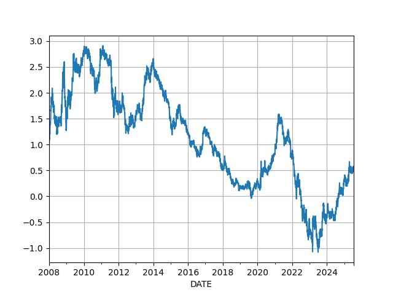
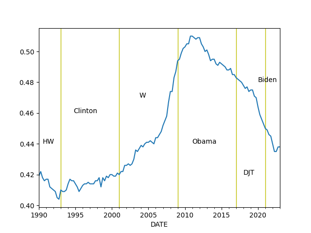
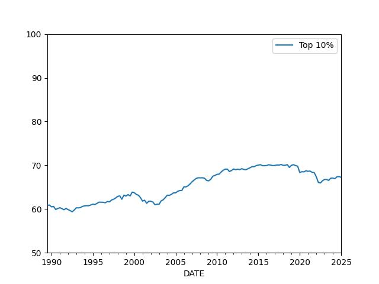

Economy, Calculations, Data
import impl as u
import pandas as pd
pd.set_option('display.max_columns', None)
GDP
GDP calc seen below is computed as annualized quarterly growth rate, quarter growth compared to previous quarter, annualized.
df = u.get_fred(1945,'GDPC1')
df['growann'] = ( ( (1+df.pct_change())**4 )-1.0 )*100.0
print (df['growann'].tail(5))
DATE
2023-04-01 2.450090
2023-07-01 4.355474
2023-10-01 3.192208
2024-01-01 1.629067
2024-04-01 2.988846
Name: growann, dtype: float64
The Cycle

df = u.get_fred(1970,'GDPC1')
fig, axs = plt.subplots(2)
df['gdpyoy'] = (df.GDPC1 - df.GDPC1.shift(4)) / df.GDPC1.shift(4) * 100.0
df['gdpyoy'].plot(ax=axs[0],title="GDP and Inflation (CPI YoY)")
axs[0].axvspan('01-11-1973', '01-03-1975', color='y', alpha=0.5, lw=0)
axs[0].axvspan('01-07-1981', '01-11-1982', color='y', alpha=0.5, lw=0)
axs[0].axvspan('01-09-1990', '01-07-1991', color='y', alpha=0.5, lw=0)
axs[0].axvspan('01-03-2001', '27-10-2001', color='y', alpha=0.5, lw=0)
axs[0].axvspan('22-12-2007', '09-05-2009', color='y', alpha=0.5, lw=0)
print (df[['gdpyoy']].tail(6))
df = u.get_fred(1970,'CPIAUCNS')
df['inf'] = (df.CPIAUCNS - df.CPIAUCNS.shift(12)) / df.CPIAUCNS.shift(12) * 100.0
df['inf'].plot(ax=axs[1])
axs[1].axvspan('01-11-1973', '01-03-1975', color='y', alpha=0.5, lw=0)
axs[1].axvspan('01-07-1981', '01-11-1982', color='y', alpha=0.5, lw=0)
axs[1].axvspan('01-09-1990', '01-07-1991', color='y', alpha=0.5, lw=0)
axs[1].axvspan('01-03-2001', '27-10-2001', color='y', alpha=0.5, lw=0)
axs[1].axvspan('22-12-2007', '09-05-2009', color='y', alpha=0.5, lw=0)
print (df[['inf']].tail(6))
plt.savefig('cycle.png')
gdpyoy
DATE
2023-01-01 2.280809
2023-04-01 2.829462
2023-07-01 3.236308
2023-10-01 3.196217
2024-01-01 2.901832
2024-04-01 3.036849
inf
DATE
2024-03-01 3.477385
2024-04-01 3.357364
2024-05-01 3.269029
2024-06-01 2.971397
2024-07-01 2.894753
2024-08-01 2.530730
The Taylor Rule
df = u.get_fred(1970,['GDPC1','GDPPOT','PCEPI','FEDFUNDS'])
df = df.interpolate().resample('AS').mean()
longrun = 2.0
df['Gap'] = 100 * (df.GDPC1 / df.GDPPOT - 1.0)
df['Curr'] = df.PCEPI.pct_change()*100.
df['Taylor'] = (longrun + df.Curr + 0.5*(df.Curr - longrun) + 0.5*df.Gap)
print (df.Taylor.tail(4))
df[['FEDFUNDS','Taylor']].plot()
plt.savefig('taylor.jpg',quality=40)
DATE
2021-01-01 7.548193
2022-01-01 11.153139
2023-01-01 7.511558
2024-01-01 5.216667
Freq: AS-JAN, Name: Taylor, dtype: float64

Wages and Unemployment
Job Quits, Resignations
df = u.get_fred(1986,['JTSQUR'])
print (df.JTSQUR.tail(5))
df.JTSQUR.plot()
plt.axvspan('01-09-1990', '01-07-1991', color='y', alpha=0.5, lw=0)
plt.axvspan('01-03-2001', '27-10-2001', color='y', alpha=0.5, lw=0)
plt.axvspan('22-12-2007', '09-05-2009', color='y', alpha=0.5, lw=0)
plt.title('Resignations')
plt.savefig('quits.png')
DATE
2024-03-01 2.2
2024-04-01 2.2
2024-05-01 2.1
2024-06-01 2.0
2024-07-01 2.1
Name: JTSQUR, dtype: float64

Wages
df3 = u.get_fred(1950,['ECIWAG'])
df3 = df3.dropna()
df3['ECIWAG2'] = df3.shift(4).ECIWAG
df3['wagegrowth'] = (df3.ECIWAG-df3.ECIWAG2) / df3.ECIWAG2 * 100.
print (df3['wagegrowth'].tail(4))
df3['wagegrowth'].plot(title='Wage Growth')
plt.savefig('wages.png')
DATE
2023-07-01 4.428755
2023-10-01 4.314721
2024-01-01 4.265997
2024-04-01 4.034761
Name: wagegrowth, dtype: float64

Difference Between Wage Growth YoY and Total Payrolls, see [5]
df = u.get_fred(1986,['PAYEMS','AHETPI'])
df['nfpyoy'] = (df.PAYEMS - df.PAYEMS.shift(12)) / df.PAYEMS.shift(12) * 100.0
df['wageyoy'] = (df.AHETPI - df.AHETPI.shift(12)) / df.AHETPI.shift(12) * 100.0
df[['wageyoy','nfpyoy']].plot()
plt.axvspan('01-09-1990', '01-07-1991', color='y', alpha=0.5, lw=0)
plt.axvspan('01-03-2001', '27-10-2001', color='y', alpha=0.5, lw=0)
plt.axvspan('22-12-2007', '09-05-2009', color='y', alpha=0.5, lw=0)
print (df['wageyoy'].tail(5))
print (df['nfpyoy'].tail(5))
plt.savefig('pay-wage.png')
DATE
2024-04-01 4.009763
2024-05-01 4.029177
2024-06-01 4.048443
2024-07-01 3.892525
2024-08-01 4.056377
Name: wageyoy, dtype: float64
DATE
2024-04-01 1.755808
2024-05-01 1.696547
2024-06-01 1.615746
2024-07-01 1.553028
2024-08-01 1.507470
Name: nfpyoy, dtype: float64

Compensation and Profits Comparison [5]
1) US Employee Compensation as a % of GVA of Domestic Corporations
2) US Corporate Profits as a % of GDP
df = u.get_fred(1965, ['A442RC1A027NBEA','A451RC1Q027SBEA','CP','GDP']).interpolate()
df['profgdp'] = (df.CP / df.GDP)*100.0
df['compgva'] = (df.A442RC1A027NBEA / df.A451RC1Q027SBEA)*100.0
u.two_plot(df, 'profgdp','compgva')
print (df[['profgdp','compgva']].tail(5))
plt.axvspan('01-12-1969', '01-11-1970', color='y', alpha=0.5, lw=0)
plt.axvspan('01-11-1973', '01-03-1975', color='y', alpha=0.5, lw=0)
plt.axvspan('01-01-1980', '01-11-1982', color='y', alpha=0.5, lw=0)
plt.axvspan('01-09-1990', '01-07-1991', color='y', alpha=0.5, lw=0)
plt.axvspan('01-03-2001', '27-10-2001', color='y', alpha=0.5, lw=0)
plt.axvspan('22-12-2007', '09-05-2009', color='y', alpha=0.5, lw=0)
plt.savefig('compprof.png')
profgdp compgva
DATE
2023-04-01 10.888075 56.450899
2023-07-01 11.137799 55.505487
2023-10-01 11.448750 54.495225
2024-01-01 11.580971 53.551775
2024-04-01 11.762248 52.658574

Unemployment
Calculation is based on [2]
cols = ['LNS12032194','UNEMPLOY','NILFWJN','LNS12600000','CLF16OV','UNRATE','U6RATE']
df = u.get_fred(1986,cols)
df['REAL_UNEMP_LEVEL'] = df.LNS12032194*0.5 + df.UNEMPLOY + df.NILFWJN
df['REAL_UNRATE'] = (df.REAL_UNEMP_LEVEL / df.CLF16OV) * 100.0
pd.set_option('display.max_columns', None)
df1 = df.loc[df.index > '2005-01-01']
df1[['UNRATE','U6RATE','REAL_UNRATE']].plot()
plt.title('Unemployment Rate')
print (df1[['UNRATE','U6RATE','REAL_UNRATE','REAL_UNEMP_LEVEL']].tail(5))
plt.savefig('unemploy.png')
UNRATE U6RATE REAL_UNRATE REAL_UNEMP_LEVEL
DATE
2024-04-01 3.9 7.4 8.550619 14363.5
2024-05-01 4.0 7.4 8.689755 14575.5
2024-06-01 4.1 7.4 8.425144 14155.0
2024-07-01 4.3 7.8 8.933141 15046.0
2024-08-01 4.2 7.9 8.998570 15167.0

Vacancy rate, job openings divided by unemployed people
df = u.get_fred(2000, ['JTSJOL','UNEMPLOY'])
df = df.dropna()
df['VRATE'] = df.JTSJOL / df.UNEMPLOY
df.VRATE.plot()
print (df.VRATE.tail(3))
plt.savefig('vrate.png')
DATE
2024-05-01 1.237780
2024-06-01 1.161357
2024-07-01 1.071199
Freq: MS, Name: VRATE, dtype: float64
Companies
Profit Margins
Divide (1) by (2) as suggested in [4],
(1) Corporate Profits After Tax (without IVA and CCAdj) (CP)
(2) Real Final Sales of Domestic Product (FINSLC1)
df = u.get_fred(1980, ['CP','FINSLC1']); df = df.interpolate()
df = df.dropna()
df['PM'] = df['CP'] / df['FINSLC1'] * 100.0
df.PM.plot()
print (df.tail(4))
plt.savefig('profitmargin.png')
CP FINSLC1 PM
DATE
2023-07-01 3114.986 22674.467 13.737858
2023-10-01 3239.649 22881.871 14.158147
2024-01-01 3314.945 23003.176 14.410814
2024-04-01 3413.018 23113.092 14.766601

Finance
Dollar
df = u.get_yahoo_ticker2(1980, "DX-Y.NYB").interpolate()
print (df.tail(4))
m,s = df.mean(),df.std()
print (np.array([m-s,m+s]).T)
df.tail(1000).plot()
plt.grid(True)
plt.savefig('dollar.png')
DX-Y.NYB
2024-09-24 100.370003
2024-09-25 100.919998
2024-09-26 100.559998
2024-09-27 100.728996
[[ 81.5879746 111.79426241]]

Schiller P/E
Overlay Schiller's P/E ratio on top SP 500 10-year returns [6] since 1920s. Lows and highs arrive 10 years after the market is most expensive and cheapest, respectively. The two graphs should show perfect reverse correlation.
df = pd.read_csv('../../mbl/2024/sp500.csv',index_col='Date',parse_dates=True)
df['schiller'] = pd.read_csv('../../mbl/2024/schiller.csv',index_col='Date',parse_dates=True)['Schiller']
df = df[df.index > '1940-01-01']
df['SPY10'] = df.SPY.shift(-12*10)
df['chg'] = ((df.SPY10 - df.SPY) / df.SPY)*100
u.two_plot2(df.chg, 'spy', df['schiller'], 'schiller')
plt.savefig('schiller.jpg')
Junk Bond Yields
df = u.get_fred(1980,['BAMLH0A2HYBEY'])
print (df.tail(6))
df.plot()
plt.axvspan('2001-03-03', '2001-10-27', color='y', alpha=0.5, lw=0)
plt.axvspan('2007-12-22', '2009-05-09', color='y', alpha=0.5, lw=0)
df.BAMLH0A2HYBEY.tail(1).plot(style='r.',markersize=10)
plt.savefig('junkbond.png')
BAMLH0A2HYBEY
DATE
2024-09-18 6.70
2024-09-19 6.57
2024-09-20 6.62
2024-09-23 6.62
2024-09-24 6.66
2024-09-25 6.68

3 Month, 2 and 10 Year Treasury Rates
df = u.get_fred(1980,['DGS3MO','DGS2','DGS10','FEDFUNDS'])
df = df.interpolate()
df.plot()
plt.axvspan('01-09-1990', '01-07-1991', color='y', alpha=0.5, lw=0)
plt.axvspan('01-03-2001', '27-10-2001', color='y', alpha=0.5, lw=0)
plt.axvspan('22-12-2007', '09-05-2009', color='y', alpha=0.5, lw=0)
print (df.tail(3))
plt.savefig('treasuries.png')
DGS3MO DGS2 DGS10 FEDFUNDS
DATE
2024-03-26 5.46 4.56 4.24 5.33
2024-03-27 5.45 4.54 4.20 5.33
2024-03-28 5.46 4.59 4.20 5.33

Treasury Curve
df = u.get_fred(1980,['DGS2','DGS10'])
df = df.interpolate()
df['inv'] = df.DGS10 - df.DGS2
df['inv'].plot(grid=True)
plt.axvspan('01-09-1990', '01-07-1991', color='y', alpha=0.5, lw=0)
plt.axvspan('01-03-2001', '27-10-2001', color='y', alpha=0.5, lw=0)
plt.axvspan('22-12-2007', '09-05-2009', color='y', alpha=0.5, lw=0)
plt.savefig('tcurve.jpg')

df = u.get_fred(2008,['DGS2','DGS10'])
df = df.interpolate()
df['inv'] = df.DGS10 - df.DGS2
df['inv'].plot(grid=True)
print (df.inv.tail(4))
plt.savefig('tcurve2.jpg')
DATE
2024-10-31 0.12
2024-11-01 0.16
2024-11-04 0.14
2024-11-05 0.07
Name: inv, dtype: float64

VIX
df = u.get_yahoo_ticker2(2000,"^VIX")
df.plot()
plt.axvspan('22-12-2007', '09-05-2009', color='y', alpha=0.5, lw=0)
print (df.tail(7))
df.tail(1).plot(style='r.',markersize=10)
plt.savefig('vix.png')
^VIX
2024-09-19 16.33
2024-09-20 16.15
2024-09-23 15.89
2024-09-24 15.39
2024-09-25 15.41
2024-09-26 15.37
2024-09-27 15.65

Wealth, Debt
Private Debt to GDP Ratio
df = u.get_fred(1960,['GDPC1','QUSPAMUSDA'])
df = df.interpolate()
df['Credit to GDP'] = (df.QUSPAMUSDA / df.GDPC1)*100.0
df['Credit to GDP'].plot()
plt.axvspan('01-09-1990', '01-07-1991', color='y', alpha=0.5, lw=0)
plt.axvspan('01-03-2001', '27-10-2001', color='y', alpha=0.5, lw=0)
plt.axvspan('22-12-2007', '09-05-2009', color='y', alpha=0.5, lw=0)
plt.axvspan('2020-02-01', '2020-05-01', color='y', alpha=0.5, lw=0)
plt.savefig('creditgdp.png')
print (df['Credit to GDP'].tail(4))
DATE
2023-07-01 179.065476
2023-10-01 178.662757
2024-01-01 179.074082
2024-04-01 177.760468
Freq: QS-OCT, Name: Credit to GDP, dtype: float64

Total Consumer Credit Outstanding as % of GDP
df = u.get_fred(1980,['TOTALSL','GDP'])
df = df.interpolate(method='linear')
df['debt'] = df.TOTALSL / df.GDP * 100.0
print (df.debt.tail(4))
df.debt.plot()
plt.axvspan('01-09-1990', '01-07-1991', color='y', alpha=0.5, lw=0)
plt.axvspan('01-03-2001', '27-10-2001', color='y', alpha=0.5, lw=0)
plt.axvspan('22-12-2007', '09-05-2009', color='y', alpha=0.5, lw=0)
plt.axvspan('2020-02-01', '2020-05-01', color='y', alpha=0.5, lw=0)
plt.savefig('debt.png')
DATE
2024-04-01 17.408223
2024-05-01 17.448622
2024-06-01 17.466638
2024-07-01 17.554354
Freq: MS, Name: debt, dtype: float64

Wealth Inequality - GINI Index
Code taken from [3]
def gini(pop,val):
pop = list(pop); pop.insert(0,0.0)
val = list(val); val.insert(0,0.0)
poparg = np.array(pop)
valarg = np.array(val)
z = valarg * poparg;
ord = np.argsort(val)
poparg = poparg[ord]
z = z[ord]
poparg = np.cumsum(poparg)
z = np.cumsum(z)
relpop = poparg/poparg[-1]
relz = z/z[-1]
g = 1 - np.sum((relz[0:-1]+relz[1:]) * np.diff(relpop))
return np.round(g,3)
cols = ['WFRBLT01026', 'WFRBLN09053','WFRBLN40080','WFRBLB50107']
df = u.get_fred(1989,cols)
df = df.interpolate()
p = [0.01, 0.09, 0.40, 0.50]
g = df.apply(lambda x: gini(p,x),axis=1)
print (g.tail(4))
g.plot()
plt.xlim('1990-01-01','2023-01-01')
plt.axvspan('1993-01-01','1993-01-01',color='y')
plt.axvspan('2001-01-01','2001-01-01',color='y')
plt.axvspan('2009-01-01','2009-01-01',color='y')
plt.axvspan('2017-01-01','2017-01-01',color='y')
plt.axvspan('2020-12-01','2020-12-01',color='y')
plt.text('1990-07-01',0.44,'HW')
plt.text('1994-10-01',0.46,'Clinton')
plt.text('2003-12-01',0.47,'W')
plt.text('2011-01-01',0.44,'Obama')
plt.text('2018-01-01',0.42,'DJT')
plt.text('2020-03-01',0.48,'Biden')
plt.savefig('gini.png')
DATE
2023-07-01 0.439
2023-10-01 0.440
2024-01-01 0.440
2024-04-01 0.440
dtype: float64

Percentage of Wealth Held by Top 10%
cols = ['WFRBLT01026', 'WFRBLN09053','WFRBLN40080','WFRBLB50107']
df = u.get_fred(1970,cols)
df = df.interpolate()
df['Total'] = df['WFRBLT01026'] + df['WFRBLN09053'] + df['WFRBLB50107'] + df['WFRBLN40080']
df['Top 10%'] = (df['WFRBLT01026'] + df['WFRBLN09053']) * 100 / df.Total
df['Bottom 50%'] = (df['WFRBLB50107'] * 100) / df.Total
print (df[['Top 10%','Bottom 50%']].tail(4))
df[['Top 10%']].plot()
plt.ylim(50,100)
plt.savefig('top10-2.jpg')
Top 10% Bottom 50%
DATE
2023-07-01 66.408177 2.536150
2023-10-01 66.859486 2.482500
2024-01-01 66.911300 2.493564
2024-04-01 66.723703 2.476985

Household Income
df = u.get_fred(1980, ['MEHOINUSA646N','TDSP','CPIAUCSL'])
df = df.interpolate()
df = df.dropna()
cpi = float(df.tail(1).CPIAUCSL)
df['cpi2'] = cpi / df.CPIAUCSL
df['household income'] = df.MEHOINUSA646N * df.cpi2
df['household income'].plot()
t1 = float(df.head(1)['household income'])
t2 = float(df.tail(1)['household income'])
print ("Perc change since the 80s = %0.2f" % ((t2-t1) / t2 * 100))
plt.savefig('household.jpg')
Perc change since the 80s = 14.43

Real Estate
Median house prices
df = u.get_fred(1992,"MSPUS")
df.plot()
print (df.tail(3))
plt.savefig('medhouse.jpg')
MSPUS
DATE
2023-10-01 423200.0
2024-01-01 426800.0
2024-04-01 412300.0

Foreign
Chinese Exports
df = u.get_fred(2010,['XTEXVA01CNM667S']); df.plot()
plt.savefig('exchina.jpg',quality=50)
print (df.tail(5))
XTEXVA01CNM667S
DATE
2024-04-01 2.980464e+11
2024-05-01 3.009204e+11
2024-06-01 3.064574e+11
2024-07-01 2.853014e+11
2024-08-01 3.020341e+11

References, Notes
[1] Note: for Quandl retrieval get the API key from Quandl, and place the
key in a .quandl file in the same directory as this file.
[2] Komlos
[3] Mathworks
[5] Hedgeeye
[6] Schiller